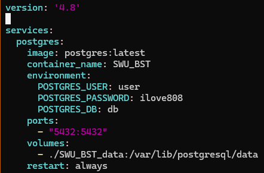

Day5 Docker与Scrapy爬虫项目¶
Docker¶
为了避免换了不同的设备你仍然需要配置相同的开发环境，程序员们集思广益开发了Docker，这是一种轻量级的虚拟化技术，主要为了实现一个目标：无论你是什么系统、什么设备，我们都能在虚拟层面上获得一个相同的开发环境，而且能很好的实现扩容迁移。此外，Docker比较安全，即使Docker崩了也不影响你本身的操作系统。
当我们在服务器上遨游的时候，我们常常会遇到装一个东西需要sudo权限，这时候老师会说，root不能给，对于泛用的东西可以帮你装，但你自己的，差不多得了。Docker同样可以解决这个问题，使用虚拟环境。
Docker默认装在root上，可以参考网上Docker的官方文档中Docker rootless有关的部分。
dockerd-rootless-setuptool.sh install
这时候，我们可以用最简单的一串代码感受以下Docker的工作流程：
docker run hello-world
然后，Docker开始工作，从镜像库里拉取镜像，创造了一个新的容器，执行了一些操作，把这些输出推到了你现在看到的终端，大概是这样的：

使用docker run -it ubuntu bash之后启动了容器，会发现你变成了root，因为你已经进入了这个容器了。
查看当前正在运行的容器：
docker ps查看已安装的镜像:
docker image <command>可以查看各种方法
这里以mongoDB为例，docker安装MongoDB有两种办法：
第一种 命令行直接安装
docker pull mongo:latest
第二种 docker desktop中搜索安装

点pull安装。
安装好之后，用以下命令启动mongo
docker run -d -p 27017:27017 --name my-mongo-container mongo
-d: 后台运行容器。
-p 27017:27017: 将主机的27017端口映射到容器的27017端口。
–name my-mongo-container: 为容器指定一个名字，这里是my-mongo-container，你可以根据需要更改。
用以下命令进入mongoDB容器的bash
docker exec -it my-mongo-container bash
进入bash之后，可以用这个命令连接mongodb
mongosh --host 127.0.0.1 --port 27017
停止容器:
docker stop my-mongo-container删除容器:
docker rm my-mongo-container
Docker compose¶
我们可以通过docker compose很轻松的管理容器。
比如，这是一个docker-compose.yml的示例程序

这里注明了很多信息，比如容器的镜像服务，服务的细则。这里我拉取的是postgresql数据库的镜像，所以有管理员用户、密码等等。
里面比较重要的是：
port：映射关系，如5432：5432，将本地的5432端口映射到服务器的5432端口
volumns：磁盘的映射，存到啥地方
那么，现在写好了这个程序（不会写也没关系，有AI和万能的搜索引擎嘛），你就可以开始体验这个工具了。
docker compose up让你的容器跑起来，当然，跑的是docker-compose.yml的那个容器。docker compose up -d可以让容器跑在后台。docker compose down关闭容器。
同样的，现在你可以使用docker ps看看这个新容器有没有成功运行起来了。
Scrapy爬虫¶
从零开始，新建一个repo。
克隆repo到本地，django初始化一下，要利用django进行储存。
分析一下网页，比如说小红书就有很多的card。我们分析卡片内容大概是包在一个id叫做noteContainer的盒子里面。项目包括几个部分，note，用户，以及用户发的东西。用户对应profile，小红书号，IP地址，简介。
设计数据库储存信息：
用户url，CharField。对于url，让它做主键（唯一）,而且主键不能为空！！所以这里不需要设置为空，下面的要。
用户ID，先观察下是不是所有的ID都是数字？这里关系到要设计成纯数字还是字符串。根据观察发现，可能也有字符，所以要设计成字符串。这里对于一般的爬虫信息来说设置两个属性，blank（允许数据为空）和null（允许数据库为空）都为True，防止报错。
用户IP归属地，字符串。
用户简介的描述，这里可以把Field属性设置成TextField。
头像，储存成URLField。
用户的名字。
上次更新时间，可以设置成DateTimeField。这是一个好习惯，此外，顺便最好要取一个TextField的content保存整个网页。
做好了4这一步，记得django里面的settings设置一下用户等信息。然后
python manage.py migrate，然后创建超级用户管理员。这些在昨天的note中都有提到。到这一步为止，数据库就建好了，可以直接通过web端的admin往里塞数据，当然这样很蠢，所以要写爬虫抓数据了。装playwright：
pip install pytest-playwright
安装playwright，可以使用镜像，我这里全局都是清华镜像，下得很快。
pip config set global.index-url https://pypi.tuna.tsinghua.edu.cn/simple
python3 -m playwright codegen --help
有反馈，说明playwright安装成功
python3 -m playwright install
装好了内核之后就可以codegen,启动这个内核，比如playwright codegen https://www.baidu.com/
接下来可以愉快的开始编写爬虫了，可以去playwright的官网copy一份模板。分析网页，编写代码。工程化一点的话，可以用虚拟环境，可以写
requirements.txt里面放所需依赖，以后就可以直接pip install -r requirements.txt了。记得写版本！我们常用的库有lxml,bs4,ipdb（前提是同步）